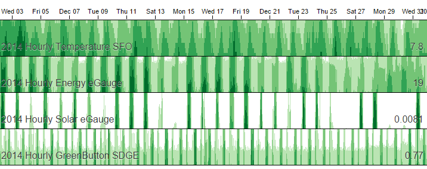
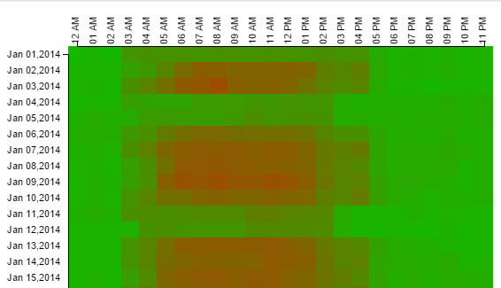
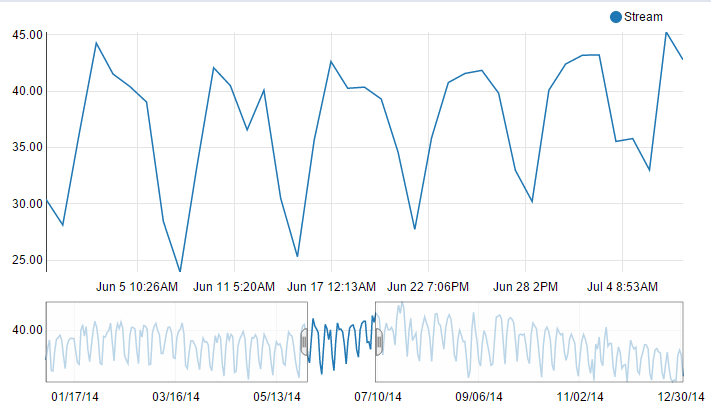
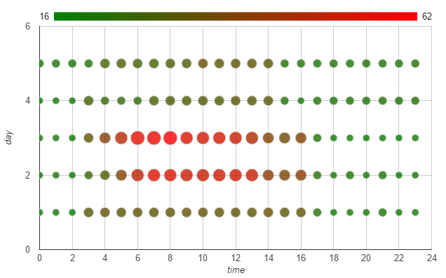
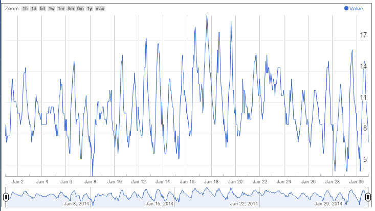

Wattdepot implemented in Meteor, a Node.js framework.
It is based on the idea from original Wattdepot (http://wattdepot.org).
This Meteor version provided more visualization and real-time re-activity (support by Meteor).
D3 Horizon Chart: 
D3 Heatmap: 
D3 Line with Focus: 
Google Bubble Chart: 
Google Annotate Chart: 